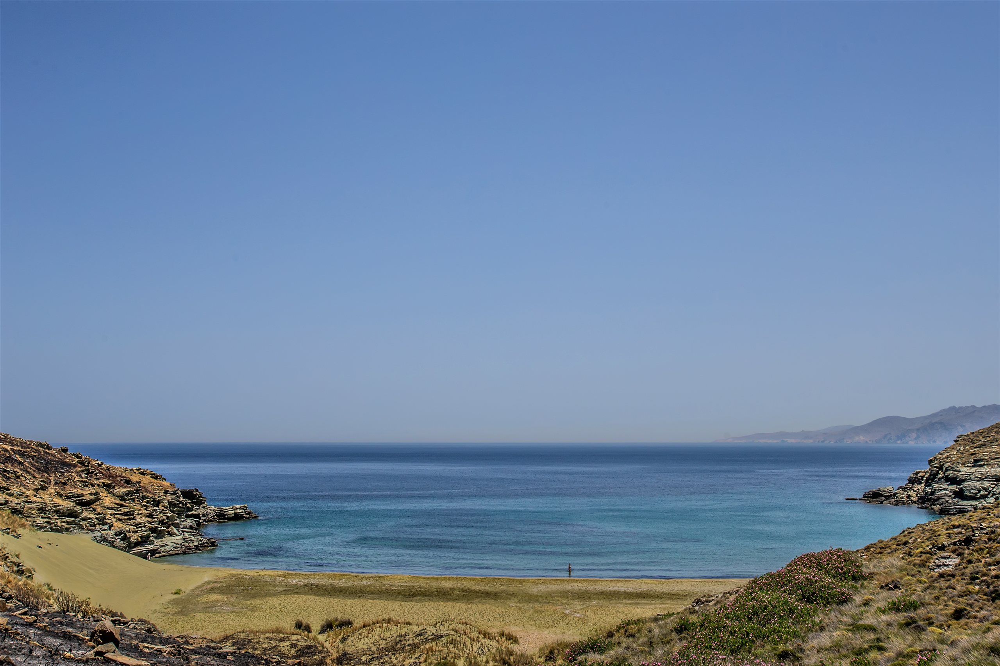
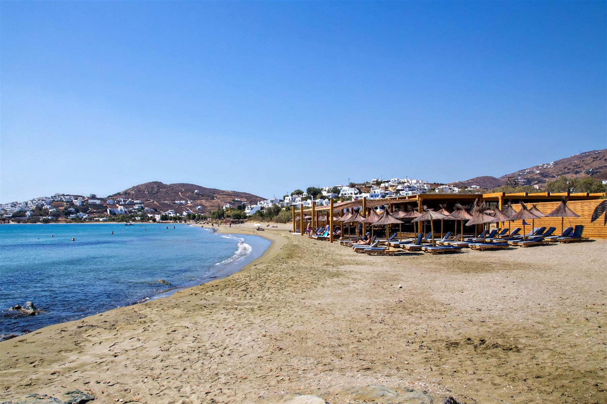
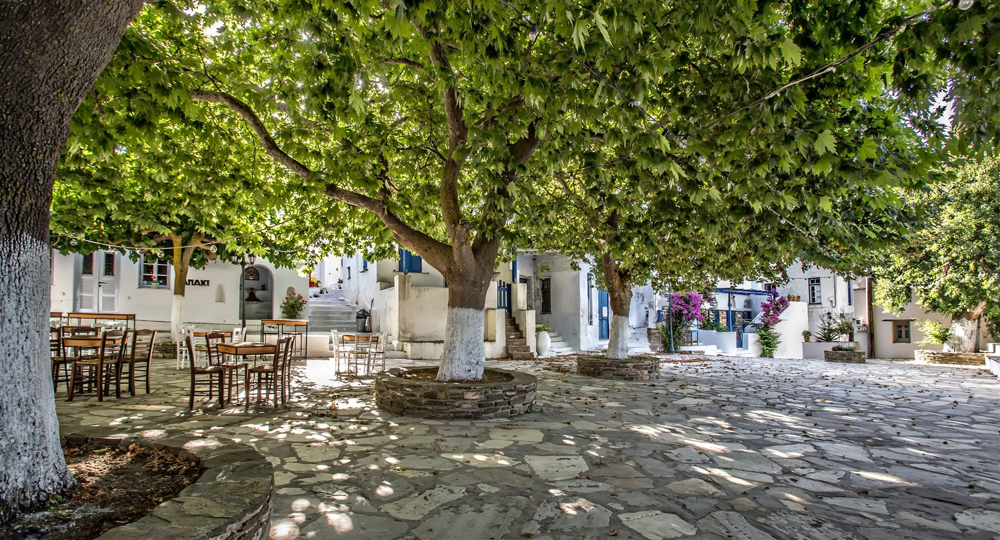
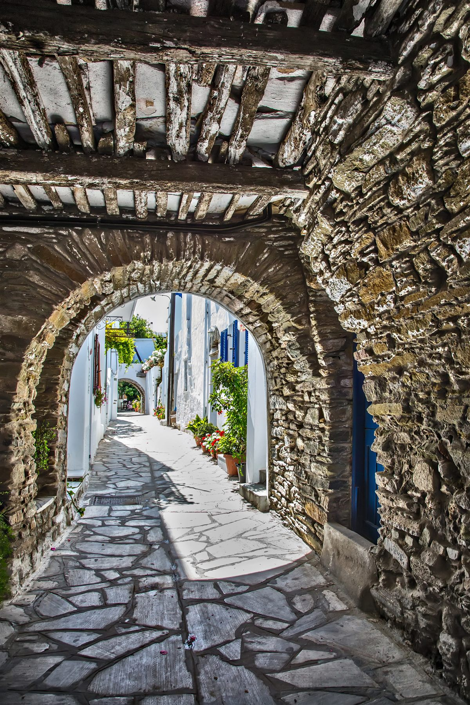
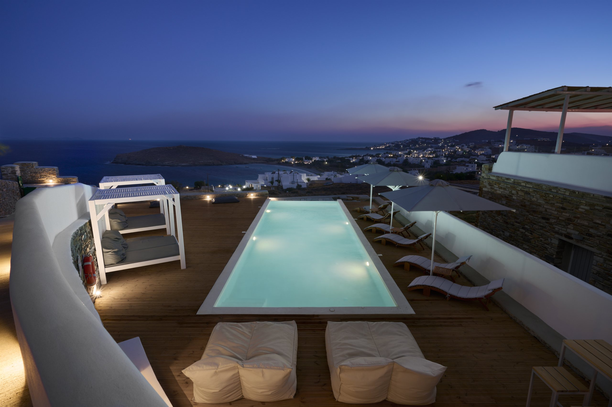
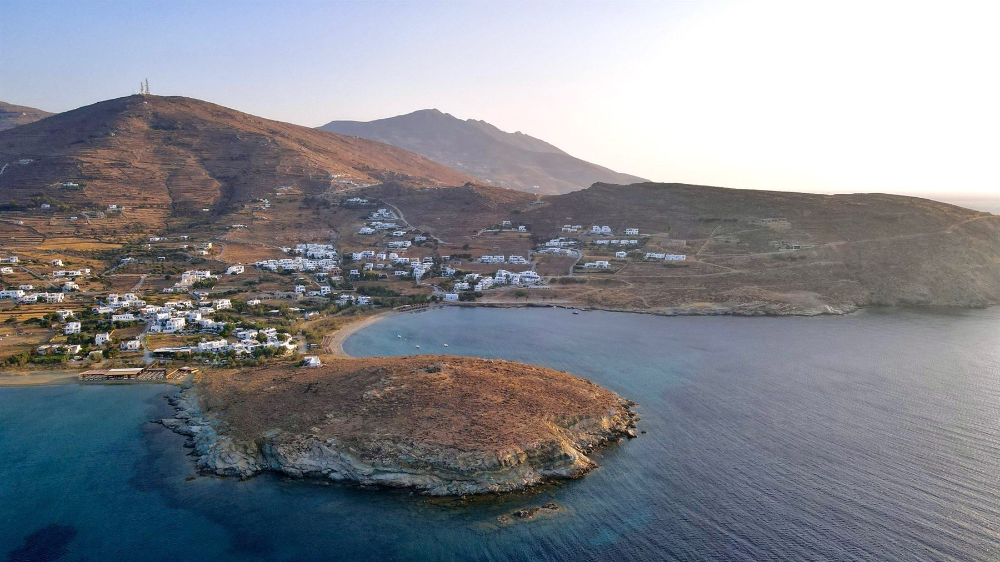

Blog
Stories from the hillside
Notes on Tinos and life at Horizon — the seasons, the food, the walks and the slow days, written from the house.
All
Island life
Food & drink
Things to do
Seasons

Seasons
Tinos in spring, before the season turns
5 min read

Island life
A day at Agios Ioannis
4 min read

Food & drink
Where we eat on Tinos
6 min read

Things to do
Walking the marble villages
5 min read

Island life
The pool, from morning to night
3 min read

Seasons
Why autumn might be the best time of all
4 min read